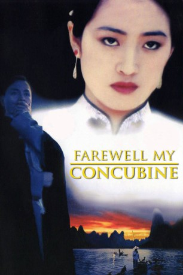

#6278 Lebewohl, meine Konkubine
Alternativ: Farewell My Concubine (Englischer Titel)
Auszeichnungen: für 2 Oscars nominiert 6 GoldenGlobes gewonnen 5 BAFTA-Awards gewonnen
 
 IMDB-Wertung: 8.1 / 10
IMDB-Wertung: 8.1 / 10  Metascore: 0
Metascore: 0 
Liebesdrama aus Hong Kong von Kaige Chen, das 1993 in Cannes die Goldene Palme gewann. Der Film ist zwischen den 1920er und 1979er Jahren in Peking angesiedelt und verfolgt die Freundschaft zwischen den beiden Opernsängern Cheng Dieyi und Duan Xiaolou, die von Repressionen, gesellschaftlichen Zwängen und einer Frau bedroht wird.
Jahr: 1993
Dauer: 164 Minuten
FSK: 12
Land: China Studio: KNM Home EntertainmentTonspuren:
Untertitel:
Auflösung: 1080p (1920x1040) Größe: 9707 MB
Genre: Drama, Musik, Liebe
Regisseur: Kaige Chen
Drehbuch: Marcus Warren
Soundtrack:
Darsteller:
 Leslie Cheung als Cheng Dieyi, segment Douzi
Leslie Cheung als Cheng Dieyi, segment Douzi- Fengyi Zhang als Duan Xiaolou, segment Shitou
 Li Gong als Juxian
Li Gong als Juxian- You Ge als Master Yuan
- Zhi Yin als Douzi as a Teenager
- Wenli Jiang als Douzi's Mother
- Qi Lü als Master Guan
- Da Ying als Manager
- Han Lei als Xiao Si, adult
- Di Tong als Zhang the Eunuch
- Mingwei Ma als Douzi as a Child
- Hailong Zhao als Shitou as a Teenager
- Yang Fei als Shitou as a Child
- Dan Li als Laizi / Peking Opera schoolboy
- Yongchao Yang als Laizi as a Child
- Fei Huang als Old Master
- Yitong Zhi als Aoki Saburo
- Chun Li als Xiao Si, in his teens
Datei: X:\HD-Eastern-Modern(A-M)\Lebewohl, meine Konkubine (1993, FSK12, 1920x1040).mkv seit 24.05.2017
Festplatte: HD Eastern+Western
 Es gibt insgesamt 104 Filme in der Gruppe 'HD-Eastern-Modern(A-M)'
Es gibt insgesamt 104 Filme in der Gruppe 'HD-Eastern-Modern(A-M)'